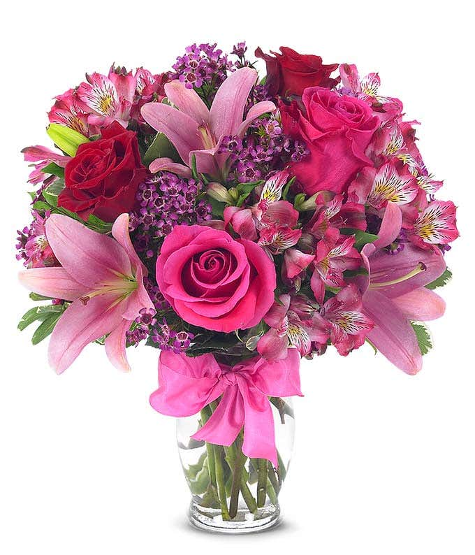
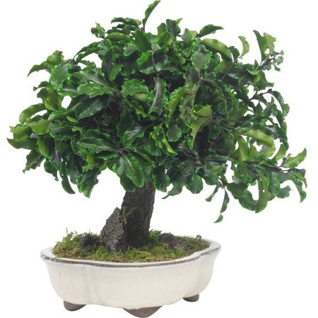
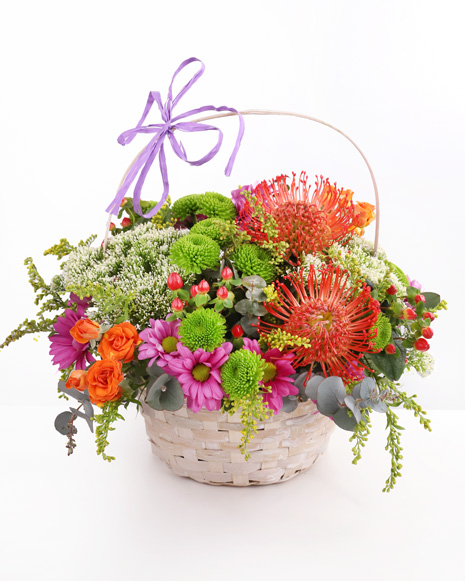

SERVICII
Fie ca este vorba de un fir de trandafir, de un buchet de magnolii sau de un bonsai la ghiveci, Sunshine Florist va sta la dispozitie.

Fire
Un fir de trandafir poate schimba ziua persoanei iubite. Detaliile fac diferenta!

Buchete
Un buchet de flori este intotdeauna cea mai buna optiune atunci cand vrei sa oferi un cadou unei doamne din viata ta.

Ghivece
O floare in ghiveci iti va oferi satisfactie in urma ingrijirii acesteia. De asemenea, florine in ghiveci semnifica bogatie.

Aranjamente
Un aranjament floral infrumuseteaza intreaga casa. Fie flori naturale sau artificiale, acestea confera o atmosfera placuta in orice moment!